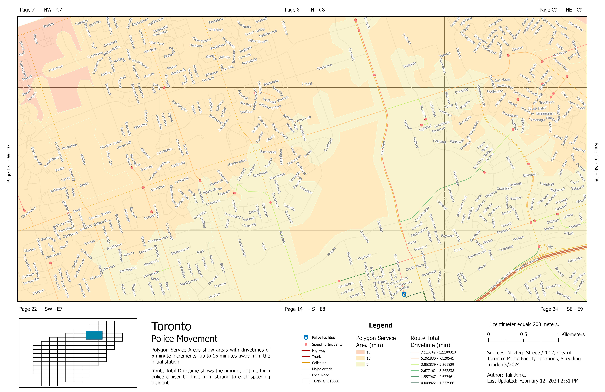
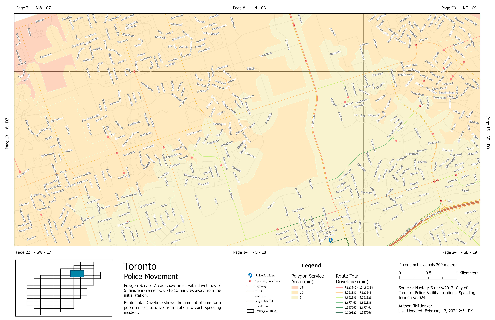
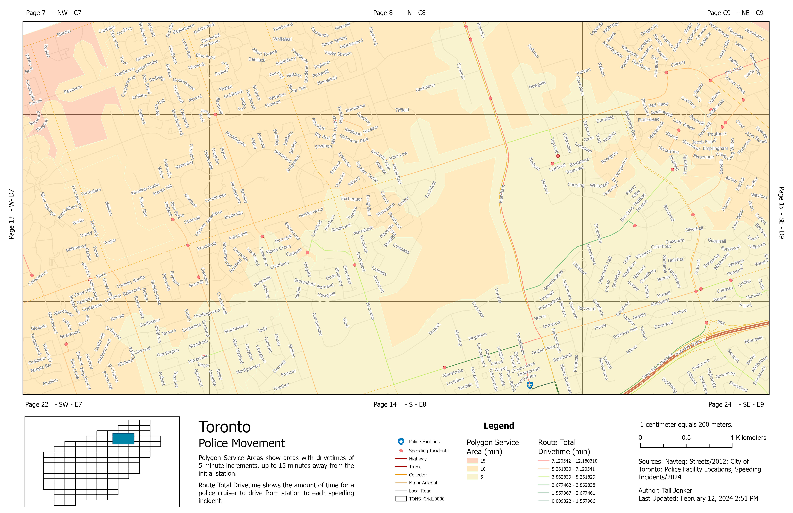
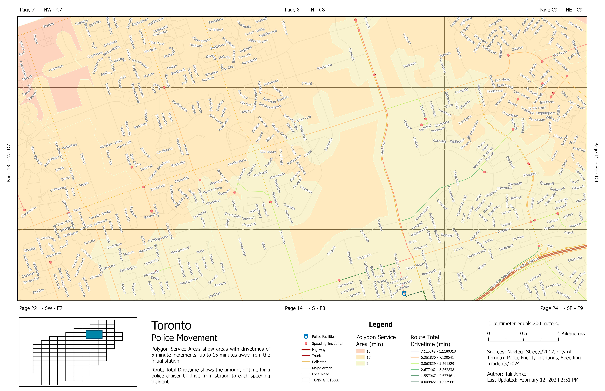

 

NOTE: All titles link to code found in Github repository.
This code was initially created in MATLAB following PCI Geomatica Image Processing equations in 2019 and is now being translated into Python code. Python libraries that are being used are: arcpy, cv2, numpy, rasterio, sklearn, and matplotlib. Both versions of the code take TIF images and then show a visual output of the enhancements.
Main Processing
This python code was developed to help bring layers from a CAD (.dwg) file to a geodatabase (gdb) in ArcGIS Pro. The client had 197 schools, and each school had its own folder with the CAD floorplans. After georeferencing, this program would automate bringing each floorplan into a feature dataset created for each school in a gdb in ArcGIS Pro
Main Processing
Main Processing
Runoff is described to be the total amount of water discharged from a watershed via river or streams, and the runoff ratio is the runoff for each watershed divided by the precipitation for that watershed (Minnesota Pollution Control Agency). This program uses open sourced data collected from the Grand River Watershed to determine statistical calculations of a selected specific station in a select month and then compares between 2018 and 2022. As well, calculates the average and compares it to other stations in the watershed.
Main Processing
Using HTML, CSS, and JavaScript, I have enjoyed developing website structures. Using JavaScript I have been able to add in different functionality to the websites.
Main Processing
I am a self-proclaimed "Jack-of-all-trades" based in Canada. While I occasionally do wall murals, my background is mainly in remote sensing and programming. I graduated from York U in 2020 with a BSc. Honors in Earth & Atmospheric Science specializing in Space Science (aka satellites) and a Certificate in Meteorology. In 2024, I completed the GIS Applications Specialist post-graduate certificate at Fleming where I was able to build on the skills learned in my degree.
I love finding different ways to bridge the gap between science and art. With my creativity from my artistic background and logical mind from my love of programming & science, I am well-equipped to find unique and resourceful solutions to challenging problems.
Spatial analysis, geovisualization, web design & web GIS development, GIS databases
Remote sensing of atmosphere and the earth, photogrammetry & image processing, climate and climate change, space vehicle dynamics, space mission design
Synoptic meteorology, cloud physics, atmospheric dynamics, numerical weather prediction